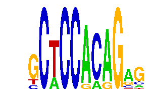

family_9 |
|---|
|  |
| Download PWM |
| Download instances (motifs) |
| Show motif distribution |
Query_ID | Query_Consensus | Subject_Name | Source_DB | Subject_ID | Length | Orientation | Offset | Divergence | Overlap | Subject_Consensus |
|---|
Sequence | Start_position (from start) | Start_position (from end) | Average conservation | Best conservation score | Instance_with_best_CS | Best_Z-score | Instance_with_best_ZS | Strand |
|---|---|---|---|---|---|---|---|---|
| chr10:7561382-7562382 | 36 | 47 | 0.183091 | 0.515 | .CTCCRMAGAG | 12.672812 | .CTCCRMAGAG | -1 |
| chr1:45370607-45371607 | 428 | 439 | 0.00636364 | 0.011 | GCWCCACRG.. | 12.849107 | GCWCCACRG.. | 1 |
| chr13:38445406-38446406 | 638 | 649 | 0.146273 | 0.307 | .CTCCRMAGAG | 12.672812 | .CTCCRMAGAG | 1 |
| chr14:55584204-55585204 | 452 | 463 | 0.00272727 | 0.005 | GCWCCACRG.. | 12.849107 | GCWCCACRG.. | 1 |
| chr4:133848968-133849968 | 646 | 657 | 0.0530909 | 0.082 | .CTCCRMAGAG | 12.672812 | .CTCCRMAGAG | 1 |
| chr6:112409315-112410315 | 159 | 170 | 0.00209091 | 0.005 | .CTCCRMAGAG | 12.672812 | .CTCCRMAGAG | 1 |
| chr4:129472154-129473154 | 497 | 508 | 0.606 | 0.796 | GCWCCACRG.. | 12.849107 | GCWCCACRG.. | -1 |
| chr1:72991230-72992230 | 404 | 415 | 0.0189091 | 0.064 | .CTCCRMAGAG | 12.672812 | .CTCCRMAGAG | 1 |
| chr3:19544151-19545151 | 325 | 336 | 0.438091 | 0.965 | .CTCCRMAGAG | 12.672812 | .CTCCRMAGAG | 1 |
| chr11:11788299-11789299 | 572 | 583 | 0.00154545 | 0.004 | .CTCCRMAGAG | 12.672812 | .CTCCRMAGAG | 1 |
| chr10:30557934-30559899 | 1417 | 1428 | 0.997727 | 1 | GCWCCACRG.. | 12.672812 | .CTCCRMAGAG | -1 |
| chr7:120099953-120100953 | 625 | 636 | 0.538818 | 0.843 | GCWCCACRG.. | 12.849107 | GCWCCACRG.. | -1 |
| chr2:76644683-76645683 | 727 | 738 | 0.0325455 | 0.17 | GCWCCACRG.. | 12.849107 | GCWCCACRG.. | -1 |
| chr18:11054522-11055522 | 604 | 615 | 0.998818 | 1 | GCWCCACRG.. | 12.849107 | GCWCCACRG.. | 1 |
| chr2:68273991-68274991 | 166 | 177 | 0.0173636 | 0.046 | GCWCCACRG.. | 12.849107 | GCWCCACRG.. | -1 |
| chr5:122509178-122510178 | 300 | 311 | 0.00363636 | 0.011 | .CTCCRMAGAG | 12.849107 | GCWCCACRG.. | -1 |
| chr4:129472154-129473154 | 134 | 145 | 0.011 | 0.032 | .CTCCRMAGAG | 12.672812 | .CTCCRMAGAG | 1 |
| chr11:88709913-88710913 | 56 | 67 | 0.00845455 | 0.017 | GCWCCACRG.. | 12.849107 | GCWCCACRG.. | 1 |
| chr7:52121463-52122463 | 453 | 464 | 0.0128182 | 0.017 | GCWCCACRG.. | 12.849107 | GCWCCACRG.. | 1 |
| chr17:27029416-27030416 | 299 | 310 | 0.00909091 | 0.031 | GCWCCACRG.. | 12.849107 | GCWCCACRG.. | -1 |
| chr9:67039403-67040403 | 603 | 614 | 0 | 0 | GCWCCACRG.. | 12.849107 | GCWCCACRG.. | 1 |
| chr5:100643632-100644632 | 608 | 619 | NA | NA | GCWCCACRG.. | 12.849107 | GCWCCACRG.. | -1 |
| chr2:113882810-113883810 | 987 | 998 | 0.337636 | 0.663 | .CTCCRMAGAG | 12.672812 | .CTCCRMAGAG | 1 |
| chr7:119806324-119807324 | 77 | 88 | 0.00836364 | 0.019 | .CTCCRMAGAG | 12.849107 | GCWCCACRG.. | -1 |
| chr3:101399640-101400640 | 498 | 509 | 0.0223636 | 0.036 | .CTCCRMAGAG | 12.672812 | .CTCCRMAGAG | 1 |
| chr19:36193489-36194489 | 838 | 849 | 0.203545 | 0.464 | GCWCCACRG.. | 12.849107 | GCWCCACRG.. | -1 |
| chr11:98244950-98245950 | 828 | 839 | 0.933 | 1 | GCWCCACRG.. | 12.849107 | GCWCCACRG.. | -1 |
| chr4:55220837-55221837 | 711 | 722 | 0.00218182 | 0.006 | GCWCCACRG.. | 12.849107 | GCWCCACRG.. | -1 |
| chr2:74924739-74925739 | 754 | 765 | 0.017 | 0.027 | GCWCCACRG.. | 12.849107 | GCWCCACRG.. | 1 |
| chr9:101097667-101099404 | 1549 | 1560 | 0.000636364 | 0.004 | .CTCCRMAGAG | 12.849107 | GCWCCACRG.. | 1 |